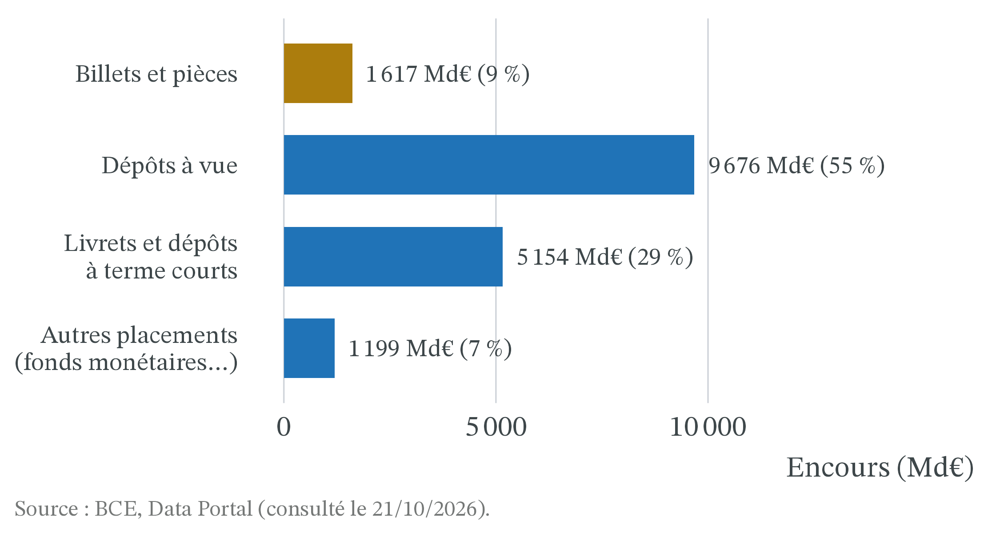
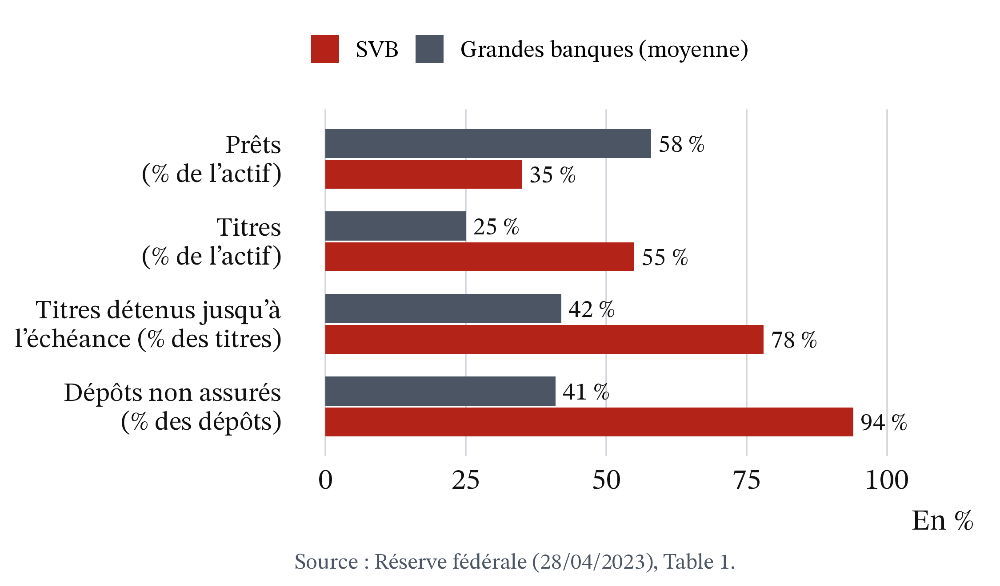
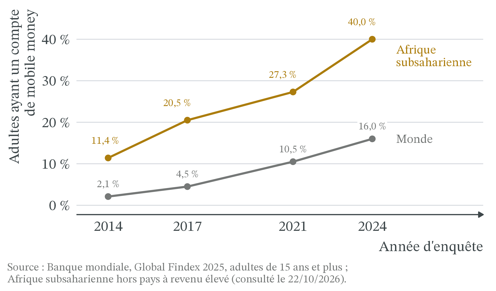
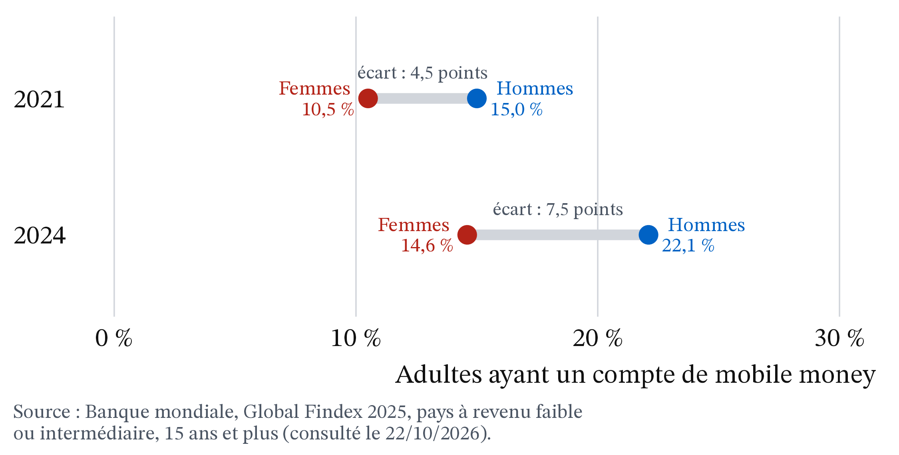

D’où vient l’argent ?
CM 6 · Partie II · La monnaie, l’État, le monde
Création monétaire par le crédit, bilan bancaire, faillites bancaires.
- Monnaie : ce que tout le monde accepte en paiement. Elle sert à échanger, à compter les valeurs (unité de compte) et à garder du pouvoir d’achat pour plus tard (réserve de valeur).
- Bilan : la photographie, à une date donnée, de ce qu’un agent possède (l’actif) et de la façon dont il l’a financé (le passif : ses dettes et ses fonds propres). Par construction, le total de l’actif égale le total du passif.
- Taux d’intérêt : le prix d’un emprunt, en pourcentage de la somme empruntée, par an.
- Analyse positive et analyse normative : la première décrit ce qui est ou ce qui se passera ; la seconde dit ce qui devrait être, à partir de valeurs.
1 La question
Le jeudi 9 mars 2023, les clients de Silicon Valley Bank (SVB), la banque californienne des start-up, retirent plus de 40 milliards de dollars en une seule journée. La direction en attend plus de 100 milliards de plus le lendemain : en tout, environ 85 % des dépôts de la banque. Le vendredi 10 mars, SVB est fermée par le régulateur (Réserve fédérale, rapport sur SVB, 28/04/2023). Le soir même, la presse titre : « Les autorités américaines prennent le contrôle de la banque SVB » (Le Figaro, 10/03/2023) ; « Silicon Valley Bank: Regulators take over as failure raises fears » (BBC News, 10/03/2023). Trois jours plus tard, le siège est désert (Figure 1) : la ruée s’est faite en ligne, pas devant les guichets.
Ces dépôts n’étaient pas des billets rangés dans un coffre. Dans la zone euro, en août 2026, la monnaie au sens large (M3) atteint 17 646 milliards d’euros, dont seulement 1 617 milliards de billets et de pièces, soit environ 9 % (BCE, Data Portal, données corrigées des variations saisonnières, consulté le 21/10/2026). Le reste, ce sont pour l’essentiel des dépôts sur des comptes bancaires.
Deux énigmes, donc.
- Si l’essentiel de la monnaie n’est pas fait de billets, qui la crée, et comment ?
- Pourquoi une banque qui fonctionne peut-elle disparaître en quarante-huit heures ?
La question de la séance : d’où vient l’argent que nous avons sur nos comptes, et pourquoi la confiance des déposants suffit-elle à faire vivre ou tomber une banque ? Deux outils y répondent : le bilan bancaire et le jeu de la panique.
2 Apports théoriques
2.1 Ce sont les crédits qui font les dépôts
Michael McLeay, Amar Radia et Ryland Thomas (2014), « Money creation in the modern economy », Bank of England Quarterly Bulletin, 2014 T1 · Banque d’Angleterre. Quand une banque accorde un prêt, elle crédite le compte de l’emprunteur : elle crée un dépôt nouveau, donc de la monnaie, au lieu de prêter l’épargne d’autres clients. La banque centrale ne fixe pas directement la quantité de monnaie : elle l’influence surtout par le taux d’intérêt.
L’article rappelle qu’au Royaume-Uni, les dépôts bancaires représentaient alors 97 % de la monnaie détenue par les ménages et les entreprises (Banque d’Angleterre, 2014).
Définition 1 (Les formes de la monnaie) La monnaie fiduciaire désigne les billets et les pièces. La monnaie scripturale désigne les dépôts à vue sur des comptes bancaires, que l’on dépense par carte, virement ou chèque : c’est une dette de la banque envers son client. La monnaie de banque centrale comprend les billets et les réserves, c’est-à-dire l’argent que les banques détiennent sur leur propre compte à la banque centrale et qu’elles utilisent pour se payer entre elles.
Définition 2 (Masse monétaire (M1, M3)) La masse monétaire est la quantité de monnaie détenue par les ménages et les entreprises d’une zone. M1 regroupe les billets, les pièces et les dépôts à vue. M3 y ajoute les placements à court terme presque aussi faciles à utiliser, comme les livrets d’épargne, les dépôts à terme courts et les parts de fonds monétaires.
La Figure 2 se lit de haut en bas : les billets et pièces ne forment que 9 % de M3, quand les dépôts à vue et l’épargne à court terme sur des comptes bancaires en forment 84 % (BCE, août 2026). L’essentiel de la monnaie est une inscription sur un compte.
Définition 3 (Création et destruction monétaires) Une banque crée de la monnaie quand elle accorde un crédit en inscrivant son montant sur le compte de l’emprunteur. En échange, elle détient une créance : l’emprunteur lui doit la somme, plus les intérêts. Quand le crédit est remboursé, le dépôt et la créance disparaissent ensemble : la monnaie est détruite.
Un prêteur qui n’est pas une banque (un fonds d’investissement, un particulier) ne crée pas de monnaie : il prête de l’argent qui existe déjà, qui passe d’un compte à un autre (La finance pour tous, mis à jour le 01/04/2026). Une banque, elle, crée un dépôt chaque fois qu’elle crédite le compte d’un emprunteur. Ce que l’article de 2014 souligne, c’est l’ordre des causes : ce sont les crédits qui font les dépôts.
2.2 Une banque transforme des dépôts courts en prêts longs
2022 · Maison Blanche, domaine public, Wikimedia Commons

2025 · Xuthoria, CC BY-SA 4.0, recadré, Wikimedia Commons

Douglas W. Diamond et Philip H. Dybvig (1983), « Bank Runs, Deposit Insurance, and Liquidity », Journal of Political Economy, 91(3), p. 401-419 · économie bancaire, « Nobel » d’économie 2022 (The Conversation, 23/03/2023). Une banque reçoit des dépôts que l’on peut retirer à tout moment et accorde des prêts qui ne seront remboursés que plus tard ; si chacun craint que les autres retirent leur argent, tous se précipitent et une banque saine peut tomber, sauf si une garantie des dépôts supprime la raison de se précipiter.
Définition 4 (Transformation des échéances) La transformation consiste à financer des prêts longs (un crédit immobilier sur 20 ans, une obligation à 10 ans) avec des ressources courtes (des dépôts retirables à tout moment). Elle est utile aux déposants comme aux emprunteurs, mais elle rend la banque fragile.
Définition 5 (Liquidité et solvabilité) Une banque est solvable si ce qu’elle possède vaut plus que ce qu’elle doit : ses fonds propres sont positifs. Elle est liquide si elle peut payer tout de suite ce qu’on lui réclame. Une banque solvable peut manquer de liquidité : ses prêts finiront par être remboursés, mais pas aujourd’hui.
Définition 6 (Panique bancaire) Une panique bancaire est une ruée des déposants qui veulent retirer leur argent en même temps, parce qu’ils craignent que la banque ne puisse pas payer tout le monde. Elle est auto-réalisatrice : la crainte d’une faillite peut suffire à la provoquer.
Définition 7 (Garantie des dépôts) La garantie des dépôts est la promesse, faite par un fonds ou par l’État, de rembourser les déposants jusqu’à un plafond si leur banque fait faillite. En France, le plafond est de 100 000 € par client et par banque (FGDR, consulté le 21/10/2026).
3 Les outils
3.1 Le bilan bancaire montre qu’un prêt crée un dépôt
Exemple 1 (Le prêt de Léa) Léa, étudiante, demande à sa banque, la banque A, un prêt de 1 000 € pour acheter un scooter. Tous les montants sont en euros.
- Avant le prêt. Le bilan de la banque A est équilibré : 10 000 à l’actif, 10 000 au passif.
| Actif | Passif | ||
|---|---|---|---|
| Réserves à la banque centrale | 2 000 | Dépôts des clients | 9 000 |
| Crédits accordés | 8 000 | Fonds propres | 1 000 |
| Total | 10 000 | Total | 10 000 |
- Le prêt. La banque inscrit 1 000 sur le compte de Léa et note, à l’actif, que Léa lui doit 1 000. Les crédits passent de 8 000 à 9 000, les dépôts de 9 000 à 10 000. Le bilan s’allonge de 1 000 des deux côtés.
| Actif | Passif | ||
|---|---|---|---|
| Réserves à la banque centrale | 2 000 | Dépôts des clients | 10 000 |
| Crédits accordés | 9 000 | Fonds propres | 1 000 |
| Total | 11 000 | Total | 11 000 |
Ce qui n’a pas bougé. Aucun autre client n’a vu son compte baisser, et les réserves sont toujours de 2 000. La banque n’a pas prêté l’argent de quelqu’un d’autre : 1 000 € de monnaie nouvelle existent.
Le paiement. Léa paie le vendeur de scooters, client de la banque B. Son dépôt de 1 000 passe à la banque B. Pour régler ce paiement, la banque A transfère 1 000 de réserves à la banque B. Chez A, les dépôts reviennent à 9 000 et les réserves tombent à 1 000 ; le total redevient 10 000 (1 000 + 9 000 = 9 000 + 1 000). La monnaie créée n’a pas disparu : elle est maintenant sur le compte du vendeur, à la banque B.
Le remboursement. Plus tard, Léa rembourse son prêt avec son salaire d’été. Son dépôt baisse de 1 000 et la créance de la banque aussi : la monnaie créée au point 2 est détruite.
Bilan de l’exemple. Le crédit a créé la monnaie (point 2). La banque a eu besoin de réserves seulement quand l’argent est parti vers une autre banque (point 4).
« Une banque ne prête que l’argent que ses clients ont déposé. » C’est vrai d’un fonds ou d’un particulier qui prête, pas d’une banque : chez elle, le dépôt naît du prêt (Exemple 1, point 2). L’erreur inverse existe aussi : « la banque crée de l’argent sans limite ». Le point 4 montre qu’elle doit se procurer des réserves pour régler les paiements vers les autres banques : elle les emprunte à d’autres banques ou à la banque centrale, au taux que celle-ci fixe. C’est par ce prix, plus que par la quantité de réserves, que la politique monétaire limite le crédit.
3.2 La création monétaire a des limites
Qu’est-ce qui empêche une banque de prêter sans fin ? La Banque d’Angleterre (2014) donne trois limites.
- La banque elle-même. Chaque prêt doit être rentable face aux banques concurrentes, et risqué le moins possible : un prêt non remboursé est une perte. La réglementation impose aussi des fonds propres et un minimum d’actifs liquides.
- Les ménages et les entreprises. Ils peuvent détruire la monnaie aussitôt créée, par exemple en remboursant d’autres crédits.
- La politique monétaire. En fixant ses taux, la banque centrale rend le crédit plus ou moins cher, donc plus ou moins demandé. C’est la limite ultime.
La troisième limite se voit dans les chiffres de la zone euro.
![Graphique en lignes de 2019 à 2026, trois séries. La monnaie M3, en noir, croît de 4 à 6 % par an en 2019, bondit à 12,5 % en janvier 2021, puis ralentit, devient négative de juillet à novembre 2023 avec un creux à moins 1,3 % en août 2023, et remonte vers 3,5 % en 2026. Les crédits aux entreprises, en bleu, montent à plus de 7 % en 2020, retombent vers 2 % en 2021, culminent à 8,9 % en septembre 2022, deviennent légèrement négatifs en octobre 2023 et remontent à 4,2 % en août 2026. Les crédits aux ménages, en orange, restent entre 3 et 4,6 % jusqu'en 2022, tombent vers 0,2 % en 2024 et remontent à 3,1 % en 2026. Une ligne verticale en tirets marque juillet 2022.](cm6_files/figure-html/fig-m3-credits-1.png)
La Figure 3 se lit en trois temps.
- En 2020, l’année de la crise sanitaire, les crédits aux entreprises s’accélèrent, et M3 avec eux, jusqu’à +12,5 % sur un an en janvier 2021. La banque centrale crée aussi des dépôts quand elle achète des titres sur les marchés (Banque d’Angleterre, 2014) : c’est une autre source de monnaie, qui n’apparaît pas sur ce graphique, voir Figure 4 pour sa trace dans le bilan de la BCE.
- À partir de l’été 2022, la BCE relève ses taux, pour des raisons que le CM 7 explique. Les crédits ralentissent, puis les crédits aux entreprises baissent légèrement en octobre 2023 (−0,2 %). M3 recule même : −1,3 % sur un an en août 2023. Moins de crédits nouveaux et des remboursements qui continuent : de la monnaie est détruite.
- En août 2026, M3 croît de 3,5 % sur un an, les crédits aux ménages de 3,1 % et aux entreprises de 4,2 % (BCE, communiqué du 25/09/2026).
Ce n’est pas une preuve au sens strict, car d’autres causes jouent en même temps. Mais le mouvement commun du crédit et de la monnaie est celui que prévoit la théorie : quand le crédit cale, la création monétaire cale.
Ces achats laissent une trace dans le bilan de la BCE : la Figure 4 montre les titres achetés et les réserves (monnaie de banque centrale) qu’elle crée pour les payer ; les dépôts créés chez les vendeurs non bancaires n’y figurent pas. De fin 2014 à juin 2022, les titres que l’Eurosystème détient pour sa politique monétaire passent de 217 à 4 964 milliards d’euros, et les réserves des banques de 300 milliards à un sommet de 4 799 milliards en octobre 2022. Depuis, les deux reculent : au 16 octobre 2026, 3 311 milliards de titres et 2 291 milliards de réserves (BCE, consulté le 22/10/2026).
![Graphique en lignes de 2007 à 2026, en milliards d'euros. La ligne bleue des titres achetés par la BCE part de zéro en 2009, reste sous 300 milliards jusqu'en 2014, monte à environ 2 600 milliards en 2018, puis à près de 5 000 milliards à la mi-2022, et redescend à 3 311 milliards en octobre 2026. La ligne orange des réserves des banques suit à peu près le même chemin : 300 milliards fin 2014, environ 2 000 milliards en 2018-2019, un sommet à 4 799 milliards en octobre 2022, puis 2 291 milliards en 2026. La ligne grise des billets monte lentement et régulièrement, d'environ 600 à 1 633 milliards.](cm6_files/figure-html/fig-bce-titres-1.png)
3.3 Une rumeur peut faire tomber une banque saine
Le bilan de l’Exemple 1 cache une fragilité : les dépôts sont exigibles tout de suite, les crédits ne rapportent qu’à terme. Diamond et Dybvig (1983) en tirent un petit jeu, chiffré ici avec des nombres ronds.
Exemple 2 (Le jeu de la panique) Une banque fictive a 100 déposants, qui ont chacun déposé 100 €. Elle garde 1 000 € de réserves et a prêté 9 000 € à des entreprises, qui rembourseront dans un an avec 10 % d’intérêts. Le contrat de dépôt dit : « 100 € tout de suite, ou 110 € dans un an. » Chaque année, 10 déposants ont besoin de leur argent tout de suite (un loyer, une panne). Si la banque doit vendre ses prêts en urgence, elle n’en obtient que la moitié de leur montant.
- En temps calme. Les 10 déposants pressés retirent 10 × 100 = 1 000 € : les réserves suffisent. Dans un an, les prêts rapportent 9 000 × 1,10 = 9 900 €, partagés entre les 90 autres : 9 900 ÷ 90 = 110 € chacun. Tout le monde est payé : la banque est solvable.
- Une rumeur. Supposons que 30 déposants retirent tout de suite. Il faut 3 000 €. Les réserves donnent 1 000 € ; il manque 2 000 €. Pour les trouver, la banque vend 4 000 € de prêts à moitié prix.
- Ce que reçoit celui qui attend. Il reste 9 000 − 4 000 = 5 000 € de prêts, qui rapporteront 5 000 × 1,10 = 5 500 € dans un an, partagés entre 70 déposants : 5 500 ÷ 70 ≈ 79 €. Attendre rapporte maintenant moins que retirer (100 €). Chaque déposant a donc intérêt à retirer à son tour.
- La panique. Si tous veulent retirer, la banque peut verser au plus 1 000 + 9 000 ÷ 2 = 5 500 €. Les 55 premiers sont servis ; les 45 suivants ne reçoivent rien. Retirer en premier devient la seule protection.
- La leçon. La banque, ses prêts et ses clients sont les mêmes dans les deux cas. Seules les anticipations changent. Le calcul montre qu’attendre rapporte moins que retirer dès que 18 déposants ou plus retirent (Figure 5).
Pour ceux qui aiment l’algèbre (facultatif) : notons N le nombre de déposants qui retirent tout de suite. Si N déposants retirent (entre 10 et 55), celui qui attend reçoit (12 100 − 220 N) ÷ (100 − N). Cette somme est égale à 100 € pour N = 17,5.
![Graphique avec deux courbes. La courbe rouge, retirer tout de suite, reste à 100 euros jusqu'à 55 retraits, puis descend jusqu'à 55 euros pour 100 retraits. La courbe bleue, attendre un an, part de 110 euros pour 10 retraits, croise la rouge vers 18 retraits, descend jusqu'à zéro à 55 retraits et y reste. Deux lignes verticales en tirets marquent le seuil d'environ 18 et la banque vide à 55. Deux points marquent l'équilibre calme, à 10 retraits et 110 euros, et la panique, à 100 retraits et 55 euros.](cm6_files/figure-html/fig-panique-1.png)
La garantie des dépôts casse le mécanisme. Supposons qu’un fonds garantisse 110 € à ceux qui attendent. Personne n’a plus de raison de se précipiter : seuls les 10 déposants pressés retirent, et la garantie n’a même pas à servir. C’est le résultat central de Diamond et Dybvig : une promesse crédible empêche la panique qu’elle est censée réparer.
| Étape | Ce qui se passe | Effet sur la banque |
|---|---|---|
| 1 | Une rumeur ou une mauvaise nouvelle circule. | Chaque déposant se demande si les autres vont retirer. |
| 2 | Des déposants retirent tout de suite. | Les réserves baissent. |
| 3 | La banque vend ses crédits ou ses titres à la hâte. | Elle les vend sous leur valeur : elle perd de l’argent. |
| 4 | Ces pertes alimentent la rumeur. | D’autres déposants retirent : on revient à l’étape 2. |
La tableau 1 résume l’enchaînement : la crainte d’un retrait des autres provoque les retraits qu’elle redoutait.

3.4 Application : SVB, une panique en quarante-huit heures
SVB n’était pas une petite banque : avec environ 212 milliards de dollars d’actifs fin 2022, c’était la 16e banque américaine par la taille de son bilan (Réserve fédérale, 28/04/2023 ; The Conversation, 13/03/2023). Son bilan était pourtant très différent de celui des autres grandes banques.

On retrouve les ingrédients du jeu de la panique.
- Des dépôts prompts à partir. Aux États-Unis, la garantie publique couvre 250 000 dollars par déposant (The Conversation, 13/03/2023). Les clients de SVB étaient surtout des start-up et des fonds d’investissement, aux comptes bien plus gros : 94 % des dépôts n’étaient pas garantis (Figure 7). Pour eux, attendre, c’était risquer d’en perdre une partie.
- Un actif peu liquide. SVB avait placé plus de la moitié de son actif en titres, surtout des obligations longues. Quand les taux d’intérêt montent, les nouvelles obligations rapportent plus que les anciennes : celles-ci perdent de la valeur si on doit les vendre avant leur échéance. Fin 2022, un portefeuille d’obligations acheté 91 milliards de dollars n’en valait plus que 76 sur le marché, soit environ 16 % de moins ; au total, ses obligations affichaient environ 17 milliards de dollars de moins-values latentes (The Conversation, 13/03/2023). Le 8 mars 2023, SVB annonce une perte de 1,8 milliard de dollars sur la vente de 21 milliards de titres, et cherche du capital (Réserve fédérale, 28/04/2023). SVB n’était donc pas une banque parfaitement saine : selon la Réserve fédérale, les retraits reflétaient aussi des « inquiétudes fondamentales » sur la banque (28/04/2023, notre traduction). La panique a transformé une fragilité en faillite en deux jours.
- Une rumeur qui va vite. Poussés par les réseaux sociaux, ces clients très liés entre eux ont retiré leurs dépôts « de manière coordonnée » (Réserve fédérale, 28/04/2023, notre traduction) : 40 milliards de dollars le 9 mars.
Le 12 mars 2023, les autorités américaines annoncent que tous les déposants de SVB, garantis ou non, récupéreront l’intégralité de leurs dépôts (The Conversation, 13/03/2023 et 23/03/2023). La garantie a été étendue après coup, pour éviter que la panique ne gagne d’autres banques.
La Figure 8 suit les dépôts des autres banques américaines. Entre le mercredi 8 et le mercredi 15 mars 2023, les dépôts des banques américaines qui ne sont pas parmi les 25 plus grandes baissent de 2,9 %, soit 149 milliards de dollars ; ceux des 25 plus grandes augmentent de 0,5 %. Une partie des déposants semble se replier vers les plus grandes banques, mais la baisse des autres banques comprend aussi les deux banques en faillite : leurs banques-relais y sont comptées. Fin juin, les dépôts des petites banques restent 2,5 % sous leur niveau du 8 mars (Réserve fédérale, H.8, consulté le 22/10/2026).

4 Effets de répartition
4.1 Les petits déposants sont protégés, les gros beaucoup moins
Par revenu. Avec un plafond de 100 000 € par client et par banque, un ménage qui a moins que cette somme dans sa banque est couvert en entier (FGDR). Les gros déposants, entreprises ou ménages aisés, ne sont couverts que jusqu’au plafond : ce sont eux qui ont intérêt à fuir les premiers, comme chez SVB. L’extension de la garantie en mars 2023 a donc surtout protégé de gros déposants, les petits l’étant déjà.
Par territoire. En France, le Fonds de garantie des dépôts est né d’une crise locale : la défaillance du Crédit martiniquais, en 1999 (FGDR).
4.2 Les banques et leurs emprunteurs profitent de la création monétaire
Créer de la monnaie rapporte aux banques. Leur gain n’est pas la totalité des intérêts : c’est l’écart entre le taux de leurs prêts et le coût de leurs ressources (dépôts rémunérés, réserves empruntées). En contrepartie, elles portent le risque que l’emprunteur ne rembourse pas. Les emprunteurs, eux, peuvent acheter tout de suite un logement, une machine ou un scooter, sans attendre d’avoir épargné.
Le mobile money : payer sans banque, ce n’est pas créer de la monnaie
Le mobile money est un compte ouvert chez un opérateur de téléphonie, sans compte bancaire (Orange Money, MTN MoMo) : on y dépose des billets chez un agent, puis on paie ou on envoie de l’argent par téléphone. En 2025, on compte 2,3 milliards de comptes de mobile money dans le monde, et plus de 2 100 milliards de dollars y ont circulé (GSMA, State of the Industry Report on Mobile Money 2026).
Le mobile money n’est pas de la création monétaire par le crédit. L’opérateur reçoit des billets ou un virement et inscrit la même somme sur le compte du client. En général, la réglementation l’oblige à placer un montant égal sur des comptes bancaires à part, pour que les clients puissent récupérer leur argent même s’il fait faillite (GSMA, 2026, glossaire). C’est un moyen de paiement : la monnaie change de forme, pas de quantité. Il n’y a création monétaire que si une banque, commerciale ou centrale, accorde un prêt (Exemple 1) ou achète un titre.
Le crédit arrive pourtant par le téléphone. À Abidjan, des offres comme Tik Tak (Orange) ou MoMo Kash (MTN) accordent, sans guichet ni vendeur, de petits prêts de un à trois mois, sur décision d’un algorithme qui lit l’historique du compte de mobile money (Ducourant et al., The Conversation, 01/09/2026).
Qui y gagne, qui y perd ?
Par revenu. Le crédit digital dépanne des ménages aux revenus irréguliers, mais coûte cher : au Kenya, en 2021, les taux annuels allaient de 49 % à 442 % selon l’offre (Ducourant et al., 01/09/2026).
Par territoire. Le mobile money donne accès au paiement là où les banques sont rares : c’est d’Afrique subsaharienne que vient l’essentiel des nouveaux comptes (GSMA, 2026). En septembre 2025, le Sénégal a adopté une taxe de 0,5 % sur les paiements, transferts et retraits en mobile money ; selon Awa Diouf (The Conversation, 10/10/2025), ce type de taxe pèse proportionnellement plus sur les ménages pauvres et peut les ramener vers l’argent liquide.
La Figure 9 donne un ordre de grandeur de l’avance africaine : en 2024, 40 % des adultes d’Afrique subsaharienne ont un compte de mobile money, 2,5 fois plus que dans le monde (16 %) ; ils n’étaient que 11 % en 2014 (Banque mondiale, Global Findex 2025).

Par génération. À Abidjan, une enquête qualitative menée en mai 2025 auprès d’usagers du crédit digital, dont de jeunes adultes de 21 ans, montre que la plupart n’ont jamais eu accès au crédit bancaire : leur historique de mobile money tient lieu de dossier ; bien rembourser fait monter leur plafond, un retard le fait baisser (Ducourant et al., 01/09/2026). L’enquête ne compare pas les âges.
Par genre. Dans les pays à revenu faible ou intermédiaire, les femmes avaient en 2024 34 % de chances en moins que les hommes de posséder un compte de mobile money, contre 30 % en 2021 : l’écart se creuse (Banque mondiale, Global Findex 2025).
La Figure 10 reprend les données de la Banque mondiale : 14,6 % des femmes et 22,1 % des hommes ont un compte de mobile money en 2024, contre 10,5 % et 15,0 % en 2021. Les deux progressent, mais les hommes plus vite : l’écart passe de 4,5 à 7,5 points (Global Findex 2025).

5 La controverse
5.1 La banque crée-t-elle de l’argent « à partir de rien » ?
Analyse positive (ce qui est : mécanismes et effets, vérifiables).
- Les banques créent l’essentiel de la monnaie en accordant des crédits (Banque d’Angleterre, 2014 ; La finance pour tous, 2026) ; un remboursement la détruit (Banque d’Angleterre, 2014).
- La monnaie n’est pas créée sans contrepartie : chaque dépôt nouveau correspond à une dette de l’emprunteur. La création est limitée par la rentabilité, la réglementation et la politique monétaire (Exemple 1 et section précédente).
- Une banque solvable peut tomber par manque de liquidité si ses déposants paniquent (Diamond et Dybvig, 1983). SVB l’illustre en partie : ses pertes sur obligations ont donné une raison de craindre, et la panique a fait le reste.
Analyse normative (ce qui devrait être : dépend de jugements de valeur).
- Est-il juste que des banques privées touchent des intérêts sur une monnaie qu’elles créent ? Faut-il réserver la création monétaire à la puissance publique, ou la concurrence entre banques et la réglementation suffisent-elles à encadrer ce privilège ? L’analyse ne tranche pas : la réponse dépend de valeurs.
- Le pouvoir de choisir qui reçoit du crédit, donc qui peut investir, doit-il appartenir aux banques, à la banque centrale, à l’État ?
Les écoles en présence. Dans la présentation de nombreux manuels, la banque centrale fixe la quantité de monnaie de banque centrale, et les banques la « multiplient » en prêtant les dépôts qu’elles reçoivent : c’est l’approche du multiplicateur de crédit. La monnaie y est exogène : la banque centrale en pilote la quantité, une vision proche de la tradition monétariste (CM 7). En face, une tradition surtout post-keynésienne décrit une monnaie endogène, créée à la demande de crédit (Moore, 1988 ; Howells, 1995, cités par la Banque d’Angleterre, 2014). La Banque d’Angleterre se range de ce côté : le multiplicateur peut servir d’introduction, mais les banques décident d’abord de prêter, et les réserves suivent.
5.2 Faut-il garantir tous les dépôts ?
Positif. Une garantie crédible empêche la panique (Exemple 2). Mais elle a un effet pervers possible : une banque qui sait ses dépôts garantis peut prendre plus de risques, puisque ses déposants n’ont plus de raison de la surveiller. C’est l’aléa moral : celui qui est assuré se comporte de façon plus risquée, et l’assureur ne peut pas tout observer. Caroline Perrin, Aurore Burietz et Jérémie Bertrand (The Conversation, 23/03/2023) estiment qu’une garantie illimitée rassure à court terme, mais risque de rendre le système plus fragile à long terme. Éric Pichet (The Conversation, 13/03/2023) insiste, lui, sur la rapidité d’intervention de l’assureur public américain des dépôts et note que les grandes banques, aux financements plus diversifiés, ont peu souffert.
Normatif. Faut-il relever le plafond, au risque de couvrir des déposants riches capables de surveiller leur banque ? Ou le garder bas, au risque de nouvelles paniques chez les entreprises dont les comptes dépassent le plafond ? La réponse dépend du poids que l’on donne à la stabilité immédiate et aux comportements à long terme. Une autre voie consiste à mieux surveiller les banques : c’est la conclusion du rapport de la Réserve fédérale sur SVB (28/04/2023), qui reconnaît que ses superviseurs ont sous-estimé les fragilités de la banque.
En France, le Fonds de garantie des dépôts a été créé par la loi n° 99-532 du 25 juin 1999 relative à l’épargne et à la sécurité financière (article 65), après la défaillance du Crédit martiniquais. Devenu Fonds de garantie des dépôts et de résolution (FGDR), il rembourse les dépôts jusqu’à 100 000 € par client et par établissement, sous 7 jours ouvrables depuis la directive européenne 2014/49/UE du 16 avril 2014, transposée fin 2015 (FGDR, consulté le 21/10/2026). Depuis la loi n° 2018-700 du 3 août 2018, les sommes que les clients confient à un émetteur de monnaie électronique sont aussi protégées jusqu’à 100 000 €, quand elles sont placées sur un compte à part dans une banque (ibid.).
6 À retenir
- L’essentiel de la monnaie est fait de dépôts bancaires : dans la zone euro, les billets et pièces ne forment qu’environ 9 % de M3 (BCE, août 2026).
- Ce sont les crédits qui font les dépôts : une banque crée de la monnaie en prêtant, et un remboursement la détruit.
- La création monétaire a des limites : la rentabilité des prêts, la réglementation, le comportement des emprunteurs et, surtout, les taux de la banque centrale.
- Une banque transforme des dépôts courts en prêts longs : solvable, elle peut quand même manquer de liquidité.
- Une panique bancaire est auto-réalisatrice : si chacun croit que les autres vont retirer, tous retirent ; chez SVB, en mars 2023, elle a achevé une banque déjà fragilisée.
- La garantie des dépôts empêche la panique, mais peut inciter les banques au risque : jusqu’où garantir relève d’un jugement normatif.
7 Pour aller plus loin
Banque de France · « Comment est créée la monnaie ? » · 3 min 17 · mis en ligne le 01/10/2024
Banque de France · « Masse monétaire, agrégats monétaires et base monétaire » · 3 min 43 · mis en ligne le 12/09/2023
- Arte, 42, la réponse à presque tout, « Peut-on créer de l’argent à partir de rien ? », 30 min, mis en ligne le 08/08/2025 sur la chaîne YouTube d’Arte (aucune date de fin de disponibilité indiquée). Lien
Articles
- The Conversation, É. Pichet, « Faillite de la Silicon Valley Bank : pourquoi les risques d’une nouvelle crise financière restent limités », 13/03/2023. Lien
- The Conversation, C. Perrin, A. Burietz et J. Bertrand, « Garantir les dépôts bancaires de façon illimitée : une nouvelle arme contre les crises ? », 23/03/2023. Lien
- The Conversation, H. Ducourant, avec T. Beauvisage et F. Gire, « “Et clic, l’argent est là” : les usages du crédit digital en Côte d’Ivoire », 01/09/2026. Lien
- The Conversation, A. Diouf, « Mobilisation de recettes vs inclusion financière : le dilemme de la taxation du mobile money au Sénégal », 10/10/2025. Lien
Sources institutionnelles
- La finance pour tous, « La création monétaire : comment ça marche ? », mis à jour le 01/04/2026. Lien
- Banque d’Angleterre, M. McLeay, A. Radia et R. Thomas, « Money creation in the modern economy », Quarterly Bulletin 2014 T1, 14/03/2014 (en anglais). Lien
- Réserve fédérale, Review of the Federal Reserve’s Supervision and Regulation of Silicon Valley Bank, 28/04/2023 (en anglais). Lien
- BCE, « Monetary developments in the euro area: August 2026 », communiqué du 25/09/2026 (en anglais). Lien
- BCE, taux d’intérêt directeurs depuis 1999 (en anglais). Lien
- FGDR, « La garantie pour les comptes en cas de faillite bancaire », consulté le 21/10/2026. Lien
- FGDR, « Histoire du FGDR », consulté le 21/10/2026. Lien
- GSMA, State of the Industry Report on Mobile Money 2026 (en anglais). Lien
Autres sources citées
- BCE, Data Portal, « Balance Sheet Items (BSI) », consulté le 21/10/2026 (en anglais). Lien
- BCE, Data Portal, « Internal Liquidity Management (ILM) », bilan hebdomadaire consolidé de l’Eurosystème, consulté le 22/10/2026 (en anglais). Lien
- Journal of Political Economy, D. W. Diamond et P. H. Dybvig, « Bank Runs, Deposit Insurance, and Liquidity », 91(3), p. 401-419, 1983 (en anglais). Lien
- Journal of Post Keynesian Economics, P. G. A. Howells, « The Demand for Endogenous Money », 18(1), p. 89-106, 1995 (en anglais). Lien